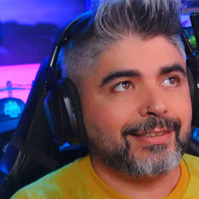

Você faz a live.
O Vodwise faz o resto.
Um copiloto que trabalha com você durante a live (chat multistream, voz, alertas, cenas, Discord) e um editor que trabalha depois: vídeo completo, melhores momentos e Shorts, renderizados no seu próprio PC.
App de desktop para Windows. Nada é publicado sem a sua aprovação. O beta é grátis, com convite.
Durante
Depois
Em uma edição de teste:
Como funciona
Antes, durante e depois da live
O Vodwise se instala no seu PC, conecta suas contas com um clique e trabalha com você a live inteira.
Antes
Prepara a live: título, categoria, miniatura, transmissões do YouTube, story do Instagram e tuíte com um «sim». E um perfil para o seu Stream Deck, se quiser.
Durante
Chat unificado, bot com comandos e pontos, vozes do chat, alertas e ações no OBS, moderação por voz, avisos no Discord. Sempre com a sua confirmação quando algo é escrito em uma plataforma.
Depois
Revisa a sua live, escolhe os momentos, monta o vídeo completo com capítulos, os «melhores momentos» e os Shorts legendados, e deixa título, descrição e miniatura prontos. Você aprova e publica.
Funções
Tudo o que uma live precisa, em um só lugar
O que antes exigia cinco programas e uma noite de edição.
Chat unificado
Twitch, Kick e YouTube em uma só janela, com emotes, insígnias, destaques e moderação a partir do nome.
Bot multistream
Comandos, temporizadores, agradecimentos, pontos e níveis, filtros de spam; o mesmo bot em Twitch, Kick e YouTube.
Alertas e overlays com IA
Alertas de follows, subs, presentes e raids; overlays e cenas desenhados pela IA com o seu logo.
Vídeo completo com capítulos
Silêncios cortados, legendas e capítulos; além dos «melhores momentos» de 8–13 minutos.
Shorts legendados
4–6 clipes verticais por live, com rastreio do rosto e manchete; com um calendário para publicar um por dia.
Avatar VTuber
Avatar 2D: envie suas imagens ou crie com IA; ele fala com a sua voz e pisca sozinho.
Comparativo
O que o Vodwise faz que os outros não fazem
O que realmente nos diferencia das ferramentas que os streamers usam hoje.
| Vodwise | StreamElements / Streamlabs | Botrix / Nightbot | Opus Clip / Eklipse | |
|---|---|---|---|---|
| Chat unificado Twitch + Kick + YouTube | ✔ | parcial | parcial | — |
| Bot de chat (comandos, pontos, temporizadores, moderação) multistream | ✔ | ✔ | ✔ | — |
| Copiloto por voz que muda cenas, títulos e categorias | ✔ | — | — | — |
| Alertas, overlays e cenas do OBS feitos com IA | ✔ | modelos | — | — |
| Edição automática da live inteira (longo + melhores + Shorts, legendas) | ✔ | destaques com IA (só alguns jogos) | — | clipes (você envia o vídeo para a nuvem deles) |
| O vídeo não sai do seu PC | ✔ | parcial | — | — |
| Título, descrição e miniatura para o YouTube, rascunhos no TikTok e Reels no Instagram | ✔ | parcial | — | parcial |
| Avatar VTuber 2D (enviar imagens ou criar com IA) | ✔ | — | — | — |
| Discord: avisos e conversa com a sua comunidade | ✔ | avisos | — | — |
| Doações na sua própria conta (Stripe ou PayPal), nome e mensagem na live | Em breve | ✔ (com taxa) | — | — |
| Preço | a partir de €14,99/mês, por uso real | grátis + extras | grátis / pro | US$ 15–30/mês |
Segundo o site público de cada produto em outubro de 2026. Se algo mudou, escreva para nós e corrigimos.
Fontes: StreamElements · Streamlabs · Streamlabs Multistream · Streamlabs AI Highlighter · Botrix · Nightbot · Opus Clip · Eklipse
Seu PC, seus dados
Suas gravações não saem do seu computador
- Edição local. O vídeo é processado no seu próprio PC.
- Nada é publicado sem a sua aprovação. Você revisa cada vídeo e cada mudança antes de sair.
- Só as suas contas. O Vodwise atua unicamente nos seus próprios canais.
- Acessos criptografados. As autorizações ficam criptografadas no seu computador e você pode revogá-las quando quiser.
- Sem anúncios nem rastreamento. Nem o app nem este site usam cookies.
O que é enviado para fora?
Para escrever títulos, escolher momentos, falar e criar miniaturas, o Vodwise envia a um provedor de IA apenas o necessário: o texto do que você diz e alguns quadros soltos; nunca a gravação inteira. Detalhes na política de privacidade.

Quem faz o Vodwise
Feito por um streamer, para streamers
Sou Diego García González, «Degolas» na Twitch, Kick e YouTube, e faço lives da Galícia, na Espanha. Comecei o Vodwise para as minhas próprias lives: queria parar de passar a noite editando e ter alguém para me dar uma mão enquanto transmito.
Uso em todas as minhas lives e melhoro com o que me contam os testers da beta. Se tiver uma dúvida ou uma ideia, escreva para soporte@vodwise.com ou pelo X.
Perguntas frequentes
O que costumam perguntar
O que é o Vodwise?
O Vodwise é um app para Windows que ajuda os streamers da Twitch, Kick e YouTube antes, durante e depois da live. Durante a live, une o chat das três plataformas, modera, cuida do bot, dos alertas e das cenas do OBS e responde quando você fala com ele. Ao terminar, revisa a gravação no seu PC e prepara o vídeo completo com capítulos, um resumo com os melhores momentos e Shorts com legendas, com títulos e miniaturas. Não publica nada sem a sua aprovação. Está em beta fechado e o app está em português, inglês e espanhol.
Qual a diferença para o Opus Clip ou o Streamlabs?
O Opus Clip transforma em clipes curtos um vídeo que você passa no site dele. O Streamlabs e o StreamElements se concentram nos alertas, nos overlays e no bot durante a live. O Vodwise junta as duas coisas num só app: acompanha você durante a live e, ao terminar, monta também o vídeo longo para o YouTube, não só clipes. A gravação fica no seu PC e nada é publicado sem o seu «sim».
Do que preciso?
Um PC com Windows, o OBS para transmitir e gravar, e espaço em disco para a gravação. Não precisa de um computador especial.
Com quais plataformas funciona?
Twitch, Kick e YouTube para a live, e YouTube, TikTok, Instagram e X para publicar. Conectam-se com um clique no app.
Publica algo sem eu ver?
Não. Ele prepara os vídeos e os textos e você decide o que sai. Durante a live, mudar o título ou moderar também passa pela sua confirmação.
Quanto custa?
Durante o beta fechado você pode usar de graça tudo o que não usa inteligência artificial; as funções com IA, pagas, chegam em breve. No lançamento haverá uma versão gratuita para sempre (sem as funções de inteligência artificial) e planos a partir de €14,99 por mês com créditos incluídos e recargas que não expiram. Cada função registra o que gasta: você vê no app.
É seguro instalar?
O beta ainda não tem assinatura digital: o Windows avisa «O Windows protegeu o seu PC»; clique em «Mais informações» → «Executar assim mesmo». O app não mexe no OBS nem nas suas plataformas sem a sua permissão.
Entre no acesso antecipado
O Vodwise está em beta fechado, com vagas limitadas. Deixe seu e-mail e confirme: quando abrir uma vaga, você recebe seu convite pessoal.
Prefere escrever? soporte@vodwise.com